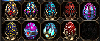
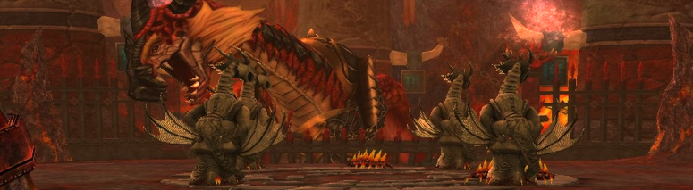
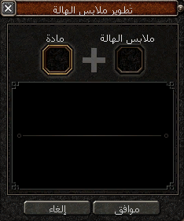
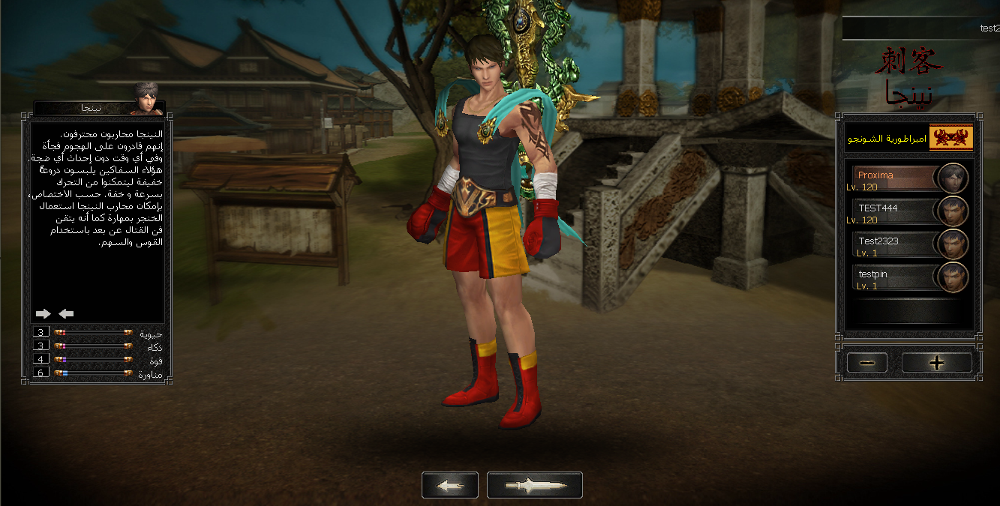

السلام عليكم ورحمة الله وبركاته , ان الهدف من بدء مشروع Beta Ultimate كان ولا زال مساعدة العملاء في بدء خادمهم الخاص دون القلق من وجود مشاكل او ثغرات قد تعيق تطور وتقدم الخادم لذلك فقد عملنا بكل جد على التأكد من خلو الملفات من الثغرات الخطيرة المنتشرة بكثرة في الملفات المجانية المنتشرة على الساحة وايضا حرصنا على جعل الملفات مواكبة للتحديثات الرسمية ( اسلحة - دروع - تسريحات - ازياء - دواب - مرافقين ) كما سنحرص على جعلها مواكبة لكافة التحديثات الرسمية من خلال التحديثات الدورية للارتقاء بمستوى الملفات وتوفير متطلبات عملائنا من خلال اضافة الانظمة الاكثر شيوعا والاكثر طلبا فى الخوادم الخاصة.
ستجد هنا شرح لمميزات النسخة.
معلومات عن السورس
النسخة تعمل على سورس Marty المشهور ولكن بها العديد من الأضافات التى تتيح لك الحصول على سيرفر كامل يمكنك من بدء مشروعك بأسرع وقت كما انه تمت معالجة الكثير من المشاكل المشهورة فى ماتين2 مثل (Memory leak) و (Item Dump Exploit) وغيرها من المشاكل الكثيرة التى قد تؤدى الى تخريب الخادم بالكامل.
سورس السيرفر
بُنى سورس السيرفر على اخر اصدار من ++C كما قد تم التخلص تماماََ من المكتبات الغير مستخدمة لجعل النظام سلس وفيما يلي سرد لأهم مميزات الملفات.
- 1- شخصيات اللعبة الرئيسية (محارب - نينجا - سورا - شامان - ليكانر) مع امكانية تعطيل شخصية الليكانر.
- 2- اقصى مستوى هو المستوى 120.
- 3- اقصى مستوى لنقاط الوضع هو المستوى 90 ( بإمكانك زيادة المستوى من خلال gen_settings.py ).
- 4- اقصى عدد مابات مصرح فيه في الكور الواحد هو 32 ماب.
- 5- إصلاح مشكلة تدبيل الأحبال تماماّ.
- 6- اقصي عدد للشخصيات داخل الحساب هو 5 شخصيات.
- 7- نظام النرد الخاص بالمجموعة حيث سيتم اجراء قرعة على الأدوات التى تسقط من الزعيم لتحديد الفائز بكل أداة
- 8- عدد صفحات نافذة الجرد هو 4 صفحات.
-
9- نظام الدواب الحديث حيث ستقوم دابتك بمرافقتك دائما ولن تحتاج الى
اعادة استدعائها لامتطائها.
-
10- نظام الأزياء كامل ( دروع - تسريحات - اسلحة - وشاح - دابة -
هالة).
- 11- ستلمع الأداة الجديدة في قائمة الجرد عند (التقاطها - المتاجرة بها - شرائها).
- 12- اضافة مهارات الصد والدفع.
-
13- اضافة نظام الرفيق مع وجود عدد 9 رفيق.

-
14- نظام معلومات الوحش ( مستوى - عدائي).
-
15- تم الغاء نظام الوون نظراََ لوجود العديد من الثغرات به واستبداله
بنظام اليانغ اللا محدود.
-
16- عملة الغايا.
-
17- نظام جعبة السهام.
-
18- نظام التشكيل.
- 19- نظام تحويل علاوة الزي.
- 20- نظام تغيير القناة دون الحاجة للذهاب لصفحة تسجيل الدخول.
-
21- نظام رؤية دم اللاعب وايضا تستطيع رؤية التعويذة التى يرتديها
اللاعب.
-
22- الغابة السحرية كاملة.
- 23- تستطيع استبدال اماكن الادوات مع بعضها.
-
24- سيظهر لقب قائد بجوار قائد الرابطة.
-
25- خيار جديد في المجموعة يتيح لك تقسيم الخبرة بشكل متساوِِ بين
اعضاء المجموعة بغض النظر عن فرق المستوى.

-
26- نظام التعويذات كامل.
- 27- تفعيل ميزة مقاومة ضد نصف البشر.
-
28- تفعيل نظام كسر الدفاع ( ستستطيع تجاوز دفاع الخصم ان كان لديك
ميزة كسر ضد دفاع الخصم ).
-
29- نظام ارض المعركة كامل.
-
30- كهف ميلي كامل.

-
31- نظام البف المساعد.
-
32- حدث صيد الأسياد.
عند تجميعك لعدد معين من النقاط من زعيم معين تستطيع استبدالها بصندوق من عند الشخصية المساعدة عبد-بيه, كما يوجد لائحة بترتيب اعلى اللاعبين في جمع النقاط.
-
33- حدث الربيع (عند تفعيل الحدث سيتم نزول بيض المفاجئات في المدن
الرئيسية).
-
34- نظام الألقاب المطور.
- 35- تفعيل خانة القفاز في قائمة الجرد.
-
36- نظام الروح كامل (تستطيع انجاز مهمة الى اه-يو للحصول على علبة
الروح).
يتم تطوير الروح باستخدام مخطوطة الروح ومخطوطة الروح(100%).
-
37- حدث القبض على الملك.
كما يوجد لائحة لترتيب اللاعبين.
-
38- نظام الهالة كامل مع وجود 7 اشكال مختلفة للهالة.
تستطيع تطوير الهالة الى المستوى 250.تستطيع نقل علاوة احد الاكسسوارات الى ملابس الهالة.
-
39- نظام خيارات الدردشة (يتيح لك النظام الغاء ظهور نوع معين من
الرسائل فى الدردشة).
-
40- نظام الميزة 6-7 الرسمي الجديد.
-
41- برج الزودياك كامل.
تستطيع استبدال الرموز عند الراهب ميلبون.وعند الوصول الى الطابق الأخير تستطيع الشراء من متجر زودياك.سيتم شحن النجم الروحى بواقع 1 نجم روحى/دقيقة ( يمكن تغيير العدد او الوقت ) كما يمكنك ايضا شحن النجم الروحى باستخدام مخطوطات الروح المختلفة.
-
42- تفعيل ميزة Discord Rich Presence.
-
43- مساعد السحر.
-
44- تستطيع عرض الأداة لرؤية شكلها.
-
45- تعديلات على شاشة التحميل وسيظهر ايضا نصائح عامة عن اللعبة في
شاشة التحميل.
-
46- مرشح الألتقاط التلقائي (يتيح لك فرصة تحديد نوع الأدوات التى ترغب
في التقاطها تلقائيا).
-
47- تستطيع رؤية محتويات الصناديق.
وايضا تستطيع معرفة ماهى الصناديق التى تحتوى على اداة محددة.
-
48- إمكانية فتح متاجر الشخصيات الاساسية عن بعد.
-
48- اختصارات جديدة في قائمة الجرد.
- 49- إصلاح مشكلة تراكم التأثيرات الخاصة باللعبة في حالة ترك اللعبة في الخلفية وعدم اللعب لفترة طويلة.
- 50- سد العديد من ثغرات Memory leak في سورس الكلاينت.
- 51- سد ثغرة في بف قائد المجموعة.
-
52- تعديل Race height of Actors ( تعديل طول الشخصيات والدواب ليتلائم
مع طول الدابة ). بإمكانك تخصيص طول معين للدواب من خلال ملف
race_height.txt فى مجلد root.

- 53- تعديل ثغرة تدمير للأدوات كانت تؤدى الى فصل الشنل تماماََ.
-
54- تعديل شامل على نافذة التفاصيل.

- 55- تحسين سرعة تحميل اللعبة.
-
56- اضافة خيار يتيح لك جعل اللعبة في مود HD.
- 57- جميع دروع واسلحة الرسمى بكافة اللمعات الخاصة بها.
- 58- وجود حماية في كلاينت اللعبة ضد حقن ملفات في مجلد اللعبة الرئيسي.
-
59- إضافة اداة تتيح لك جعل الزي الخاص بك دائم الأستخدام.
-
60- إضافة نظام الرقم السري الخاص بالشخصية ( لن تستطيع الدخول للشخصية
الا بعد ادخال الرقم السري الصحيح ).

-
61- نافذة اختيار الشخصية الرسمية.

-
62- نافذة إنشاء الشخصية الرسمية.
- 63- نظام كيميائي حجر التنين.
-
64- إمكانية تدمير اغراضك عن طريق رميها على مواطن سكران. ( لن تستطيع
فعل ذلك في حالة استحضار رفيقك ).
-
65- حدث Okey-Event.
-
66- إمكانية اعطاء ايكونات مميزة للمهام.
-
67- إمكانية تغيير الطقس داخل اللعبة ( ليل/نهار - تساقط الجليد -
ارضية ثلجية ).
-
68- إضافة بعض الرقصات الجديدة داخل اللعبة.
-
69- إمكانية مراقبة عمليات التجارة بين اللاعبين ( للحد من السرقات
والعمليات المشبوهة ).
-
70- إمكانية مراقبة الهمس بين اللاعبين ( للحد من السرقات والعمليات
المشبوهة ).
- 71- جميع ( اسلحة - دروع - تسريحات - ازياء - دواب - مرافقين ) اللعبة الرسمية الى تحديث v20.3.4 وسنحرص دائما على تحديث الكلاينت اولاََ بأول.
- 72- سيظهر كود الأداة فى وصف الأداة للمراقب فقط.
- 73- أرض الرابطة تعمل بدون مشاكل.
- 74- إصلاح كافة المشاكل المتعلقة بنظام حروب الروابط ( لن تعانى من مشاكل فصل نهائياََ في حرب الروابط ).
- 75- جميع أسلحة ودروع الرسمى الجديدة تحتوى على اللمعات الخاصة بها.
- 76- حل مشكلة الشاشة السوداء و تراكم التأثيرات ( فى حال ترك اللعبة فى الخلفية والرجوع للعبة بعد مدة ستلاحظ تراكم التأثيرات على شخصيتك ومن الممكن ايضا ان تكون شاشة اللعبة قد تحولت الى اللون الأسود مما يؤدي الى تعطل اللعبة تماما ).
-
77- سيعمل بف الشامان على كل اعضاء المجموعة.
-
78- نظام لائحة الترتيب (يتيح لك إمكانية رؤية ترتيب اللاعبين داخل
اللعبة).
-
79- حدث الدفاع عن السفينة (تستطيع دخول الحدث من خلال الصياد في صخرة
التنين الظلامى والدفاع عن السفينة وقتل رأس هيدرا لتحصل على هدايا
قيمة).

- 80- سيستطيع قائد المجموعة سحب اعضاء المجموعة.
-
81- إمكانية اظهار او إخفاء الازياء.

- 82- إصلاح مشكلة تدبيل متعلقة بأكسير الشمس وأكسير القمر (سيكون هناك استراحة اجبارية فى حالة تفعيل او الغاء تفعيل الأداة).
- 83- إصلاح مشكلة Memory Leak متعلقة ب مخزن المعدات.
- 84- إصلاح مشكلة تدبيل مميزات الرفاق (سيكون هناك استراحة اجبارية في حالة استدعاء والغاء استدعاء الرفيق).
- 85- إصلاح مشكلة تدبيل مميزات الدواب (اصبحت الدابة الأن تعمل كالزى حيث ان مميزاتها ستعمل فقط فى حالة استدعائها وفي حالة خلع زي الدابة من الخانة المخصصه له سيتم حذف كل المميزات الخاصة بالدابة ولن تستطيع خلع الأداه في حالة عدم توافر مساحة في قائمة الجرد).
- 86- عند الموت سيتم إعادة الاستراحة الأجبارية الخاصة بالمهارات.
- 87- سد بعض الأكواد التى يستطيع المراقب ذو الصلاحيات المنخفضة الوصول اليها لضمان حماية السيرفر تماماََ.
- 88- رفع سرعة التحرك الأفتراضية للمراقب لتصبح 500 بدلا من 100.
-
89- تحسين قائمة الشخصية.
-
90- تحسين مهارة الأختفاء للنينجا (لن يظهر اي تأثير على شخصية النينجا
تماما عند استخدام مهارة الأختفاء).
سيتم القيام بتحديثات دورية على النسخة لاصلاح المشاكل إن وجدت ولأضافة
احدث الانظمة وتطوير النسخة اولا بأول.
يمكنك ايضا التواصل معنا فى اي وقت ان اردت اضافة نظام خاص لخادمك او
لاجراء اي تعديل على السورس.
تعديلات السورس مجانية تماماََ كل ما عليك فعله هو ارسال التعديلات
وسيتم تنفيذها خلال 24-48 ساعة كحد أقصى.
يمكنك رؤية فيديوهات لبعض انظمة النسخة من خلال الصفحة المخصصة لفيديوهات النسخة او عن طريق الضغط هنا
- 1- عند شراء النسخة يجب عليك توفير استضافة ليتم تركيب الملفات في مدة اقصاها 24 ساعة.
- 2- يوجد فى النسخة حماية بحيث انه سيتم تفعيل الاي بي الخاص بك في النسخة بعد الشراء وفى حالة تغيير الاي بي يجب عليك اخبارنا أولا حتى يتم تفعيل الاي بي الجديد في مدة اقصاها 24 ساعة.
- 3- بعد الشراء سيتم ارسال رابط تحميل الخاص بالكلاينت اما ما يخص الملفات فكما ذكرنا يجب عليك ارسال بيانات الاستضافة الخاصة بك ليتم تركيبها مجاناََ.
- 4- في حال كنت احد العملاء السابقين للاصدارات السابقة فسيكون سعر الملفات 120$ بدلا من 200$.
- 5- سعر النسخة للعملاء الجدد هو 200$ غير شامل السورس.
- 6- سعر النسخة بالسورس كامل هو 500$ ولن يتوفر دعم فنى فى حال شراء النسخة بالسورس اي انه لن يتم اعطائك التحديثات مستقبلاََ.
فى النهاية نرجو من الله ان يوفقنا وإياكم الى ما يحبه ويرضاه وان تكون هذه النسخة هى وسيلة مساعدة لاصحاب الخوادم في الوصول لهدفهم والارتقاء بمستوى الخوادم العربية.